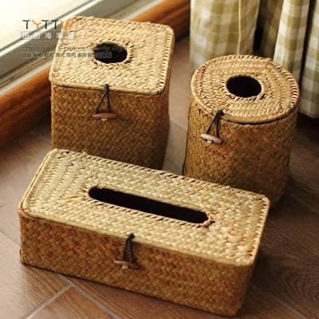
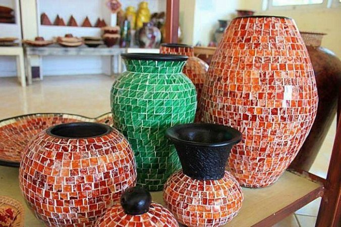
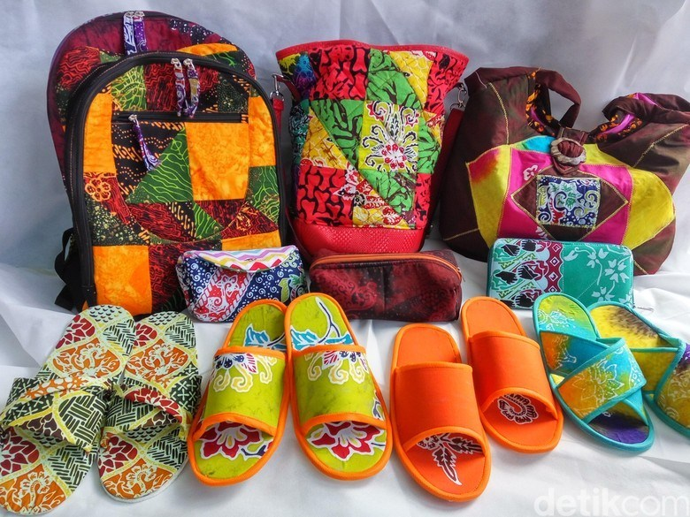

Limbah adalah bahan sisa yang dihasilkan dari suatu kegiatan atau proses produksi, baik pada skala rumah tangga, industri, pertambangan dan lain sebagainya. Ciri-ciri atau karakteristik limbah diantaranya yaitu:
Berdasarkan sifatnya, limbah dibedakan menjadi 2 jenis yaitu limbah organik (limbah yang mudah terurai) dan limbah anorganik (limbah yang sukar terurai). Nah kali ini kita akan membahas tentang pengertian limbah organik, jenis dan contoh limbah organik serta prinsip pengolahan limbah organik, berikut selengkapnya:
Limbah organik adalah limbah yang dapat diuraikan secara sempurna oleh proses biologi baik aerob atau anaerob. Limbah organik terdiri atas bahan-bahan yang bersifat organik seperti dari kegiatan rumah tangga maupun kegiatan industri.
Limbah organik ini juga bisa dengan mudah diuraikan melalui proses yang alami. Limbah ini memiliki sifat kimia yang stabil sehingga zat tersebut akan mengendap ke dalam tanah, dasar sungai, danau dan juga laut dan selanjutnya akan mempengaruhi organisme yang hidup di dalamnya. Limbah organik ini sifatnya mudah membusuk, contoh limbah organik diantaranya seperti sisa-sisa makanan, dedaunan, ranting pohon, kotoran manusia ataupun hewan, kertas, kulit pohon, tulang makhluk hidup dan lain sebagainya.
Limbah organik bisa mengalami pelapukan (dekomposisi) dan terurai menjadi bahan yang lebih kecil dan tidak berbau atau yang sering disebut dengan kompos. Kompos adalah hasil pelapukan bahan-bahan organik seperti daun-daunan, jerami, alang-alang, sampah, rumput dan bahan lain yang sejenis yang proses pelapukannya dipercepat melalui bantuan manusia.
Sampah pasar khusus seperti pasar sayur mayur, pasar buah, atau pasar ikan, memiliki jenis sampah yang relatif seragam, sebagian besar (95%) berupa sampah organik sehingga lebih mudah ditangani. Sampah yang berasal dari pemukiman umumnya sangat beragam, namun secara umum minimal 75% terdiri dari sampah organik dan sisanya sampah anorganik.
Limbah organik dibedakan menjadi 2 (dua) macam yaitu:
Limbah organik basah adalah sampah yang memiliki kandungan air cukup tinggi. Adapun contoh limbah organik basah yang bisa dijadikan karya kerajinan diantaranya kulit jagung, kulit bawang, kulit buah, biji-bijian, daun-daunan, jerami dan lain sebagainya.
Pengolahan limbah organik basah bisa dilakukan dengan cara pengeringan menggunakan sinar matahari langsung hingga kadar air dalam bahan limbah organik habis. Selanjutnya limbah yang sudah kering dapat dijadikan berbagai produk kerajinan.
Limbah organik kering adalah sampah yang memiliki kandungan air cukup rendah. Contoh limbah kering diantaranya kertas, kardus, kerang, tempurung kelapa, sisik ikan, kayu, kulit telur, serbuk gergaji dan lain sebagainya. Limbah organik kering ini dapat di daur ulang menjadi berbagai kerajinan.
Adapun prinsip-prinsip yang dapat digunakan untuk melakukan pengolahan pada limbah organik agar nantinya limbah dapat bermanfaat bukan justru menghasilkan limbah baru yang dapat merusak lingkungan. Prinsip pengolahan limbah organik, diantaranya yaitu:
Yaitu upaya meminimalisir barang atau material yang digunakan, dalam hal ini, semakin banyak menggunakan material, maka semakin banyak sampah yang dihasilkan.
Yaitu memilih barang-barang yang masih layak pakai dengan cara menghindari pemakaian barang-barang yang sekali pakai lalu dibuang.
Yaitu memanfaatkan kembali barang-barang yang dianggap sudah tidak berguna untuk di daur ulang kembali menjadi barang lain. Walaupun tidak semua barang dapat didaur ulang, namun masih banyak industri kecil dan rumah tangga yang memanfaatkan sampah menjadi barang lain.

Limbah anorganik, adalah jenis limbah yang berwujud padat, sangat sulit atau bahkan tidak bisa untuk di uraikan atau tidak bisa membusuk, limbah anorganik tidak mengandung unsur karbon, contoh limbah anorganik adalah plastik, beling, dan baja. Sampah anorganik berasal dari sumber daya alam dan kimia yang tak terbaharui. Akumulasi limbah yang merupakan sisa hasil buangan mempunyai potensi sebagai polutan (penyebab polusi). 0leh karena itu, dengan proses daur ulang limbah anorganik mendapat perhatian khusus dan penanganan yang semaksimal mungkin.
Limbah anorganik relatif sulit terurai, dan mungkin beberapa bisa terurai tetapi memerlukan waktu yang lama. Limbah tersebut berasal dari sumber daya alam yang berasal dari pertambangan seperti minyak bumi, batubara, besi, timah, dan nikel. Limbah anorganik umumnya berasal dari kegiatan industri, pertambangan, dan domistik yaitu dari sampah rumah tangga, contohnya; kaleng bekas, botol, plastik, karet sintetis, potongan atau pelat dari logam, berbagai jenis batu-batuan, pecah-pecahan gelas, tulang-belulang, karton/kardus yang tebal, dan lain-lain
Pengolahan limbah anorganik yang ada di lingkungan masyarakat terlebih dahulu dilakukan melalui beberapa cara, yaitu ;
Limbah anorganik yang digunakan sebagai bahan dasar kerajinan dapat dibedakan menjadi 2 bagian, yaitu;
Prinsip pengolahan limbah anorganik maupun organik memiliki prinsip yang sama yaitu dengan sistem 3R; reduce, reuse, dan recycle. Bacalah kembali pada bagian terdahulu agar dapat memahaminya kembali. Upaya melakukan recycle; mendaur ulang limbah anorganik menjadi karya kerajinan tangan, berarti sudah dapat mengatasi masalah lingkungan yang mengganggu kehidupan. Reduce, reuse, dan recycle dalam proses pembuatan produk kerajinan harus selalu dijalankan, sehingga dapat meminimalisir sampah yang terjadi setelah hasil produk kerajinan diperoleh
Penggunaan bahan limbah anorganik untuk didesain menjadi sebuah produk kerajinan tidaklah mudah. Kita harus memiliki motivasi yang besar dalam proses kreatif dan mengatasi masalah limbah di lingkungan, sehingga tidak sulit untuk melahirkan rancangan yang besar. Kita perlu mengetahui dan memahami prinsip dasar yang membangun kesadaran bahwa mendesain bahan limbah anorganik adalah merupakan proses menata ulang kebermanfaatan dari sebuah produk yang telah hilang nilai gunanya. Seperti yang telah diuraikan pada bab terdahulu bahwa seharusnya sebuah desain bersifat berkelanjutan (sustainable design), tidak hanya cukup secara ekonomi saja, tetapi harus mengintegrasikan isu-isu lingkungan, sosial, dan budaya ke dalam produk. Hal ini disebabkan agar desain lebih dapat bertanggung jawab dalam menjawab tantangan dalam masyarakat global. Begitu juga seorang desainer produk harus memahami pentingnya pemahaman ini.
Proses kreatif akan ditemukan saat seseorang telah memperoleh daya cerap, imajinasi melalui pengetahuan terhadap materi bahan, alat dan proses yang akan ditekuninya. Pengetahuan bahan limbah anorganik, penggunaan alat dan kemampuan keteknikan dalam bertukang akan melahirkan sebuah proses kreatif itu sendiri. Jadi kratifitas harus diupayakan tercipta dengan banyak langkah. Setelah kreatifitas muncul maka akan melahirkan produk
Produk kerajinan dari bahan limbah anorganik yang dimaksud adalah limbah anorganik lunak dan keras. Banyak orang yang sudah memanfaatkan limbah anorganik ini sebagai produk kerajinan. Teknik pembuatannya pun bervariasi. Temuan-temuan desain produk kerajinan dari limbah anorganik selalu bertambah dari waktu ke waktu. Ini dikarenakan semakin banyak orang yang telah menaruh perhatian terhadap pemanfaatan limbah anorganik sebagai produk kerajinan. Pembuatan produk kerajinan di setiap wilayah tentunya berbeda dengan wilayah lainnya
Masing-masing daerah memiliki ciri khas kerajinan yang menjadi unggulan daerahnya. Hal ini tentu dikarenakan sumber daya limbah anorganik dari masing-masing daerah berbeda. Limbah anorgnaik memiliki kecenderungan dihasilkan oleh kawasan industri dan domistik yaitu rumah tangga. Misalnya di wilayah industri limbah anorganik yang ada umumnya yang bersifat keras seperti; puing-puing logam, pecahan kaca, dan sebagainya, sedangkan rumah tangga umumnya bersifat lunak seperti; plastik, perca, dan sebagainya. Namun keduanya bisa saja memproduksi bahan limbah anorganik yang serupa.
Proses pengolahan masing-masing bahan limbah anorganik secara umum sama. Pengolahan dapat dilakukan secara manual maupun menggunakan mesin. Di bawah ini disampaikan pengolahan sederhana yang dapat dilakukan untuk bahan limbah anorganik lunak. Prosesnya yaitu :

Limbah anorganik, adalah jenis limbah yang berwujud padat, sangat sulit atau bahkan tidak bisa untuk di uraikan atau tidak bisa membusuk, limbah anorganik tidak mengandung unsur karbon, contoh limbah anorganik adalah plastik, beling, dan baja. Sampah anorganik berasal dari sumber daya alam dan kimia yang tak terbaharui. Akumulasi limbah yang merupakan sisa hasil buangan mempunyai potensi sebagai polutan (penyebab polusi). 0leh karena itu, dengan proses daur ulang limbah anorganik mendapat perhatian khusus dan penanganan yang semaksimal mungkin.
Limbah anorganik relatif sulit terurai, dan mungkin beberapa bisa terurai tetapi memerlukan waktu yang lama. Limbah tersebut berasal dari sumber daya alam yang berasal dari pertambangan seperti minyak bumi, batubara, besi, timah, dan nikel. Limbah anorganik umumnya berasal dari kegiatan industri, pertambangan, dan domistik yaitu dari sampah rumah tangga, contohnya; kaleng bekas, botol, plastik, karet sintetis, potongan atau pelat dari logam, berbagai jenis batu-batuan, pecah-pecahan gelas, tulang-belulang, karton/kardus yang tebal, dan lain-lain
Pengolahan limbah anorganik yang ada di lingkungan masyarakat terlebih dahulu dilakukan melalui beberapa cara, yaitu ;
Limbah anorganik yang digunakan sebagai bahan dasar kerajinan dapat dibedakan menjadi 2 bagian, yaitu;
Prinsip pengolahan limbah anorganik maupun organik memiliki prinsip yang sama yaitu dengan sistem 3R; reduce, reuse, dan recycle. Bacalah kembali pada bagian terdahulu agar dapat memahaminya kembali. Upaya melakukan recycle; mendaur ulang limbah anorganik menjadi karya kerajinan tangan, berarti sudah dapat mengatasi masalah lingkungan yang mengganggu kehidupan. Reduce, reuse, dan recycle dalam proses pembuatan produk kerajinan harus selalu dijalankan, sehingga dapat meminimalisir sampah yang terjadi setelah hasil produk kerajinan diperoleh
Penggunaan bahan limbah anorganik untuk didesain menjadi sebuah produk kerajinan tidaklah mudah. Kita harus memiliki motivasi yang besar dalam proses kreatif dan mengatasi masalah limbah di lingkungan, sehingga tidak sulit untuk melahirkan rancangan yang besar. Kita perlu mengetahui dan memahami prinsip dasar yang membangun kesadaran bahwa mendesain bahan limbah anorganik adalah merupakan proses menata ulang kebermanfaatan dari sebuah produk yang telah hilang nilai gunanya. Seperti yang telah diuraikan pada bab terdahulu bahwa seharusnya sebuah desain bersifat berkelanjutan (sustainable design), tidak hanya cukup secara ekonomi saja, tetapi harus mengintegrasikan isu-isu lingkungan, sosial, dan budaya ke dalam produk. Hal ini disebabkan agar desain lebih dapat bertanggung jawab dalam menjawab tantangan dalam masyarakat global. Begitu juga seorang desainer produk harus memahami pentingnya pemahaman ini.
Proses kreatif akan ditemukan saat seseorang telah memperoleh daya cerap, imajinasi melalui pengetahuan terhadap materi bahan, alat dan proses yang akan ditekuninya. Pengetahuan bahan limbah anorganik, penggunaan alat dan kemampuan keteknikan dalam bertukang akan melahirkan sebuah proses kreatif itu sendiri. Jadi kratifitas harus diupayakan tercipta dengan banyak langkah. Setelah kreatifitas muncul maka akan melahirkan produk
Produk kerajinan dari bahan limbah anorganik yang dimaksud adalah limbah anorganik lunak dan keras. Banyak orang yang sudah memanfaatkan limbah anorganik ini sebagai produk kerajinan. Teknik pembuatannya pun bervariasi. Temuan-temuan desain produk kerajinan dari limbah anorganik selalu bertambah dari waktu ke waktu. Ini dikarenakan semakin banyak orang yang telah menaruh perhatian terhadap pemanfaatan limbah anorganik sebagai produk kerajinan. Pembuatan produk kerajinan di setiap wilayah tentunya berbeda dengan wilayah lainnya
Masing-masing daerah memiliki ciri khas kerajinan yang menjadi unggulan daerahnya. Hal ini tentu dikarenakan sumber daya limbah anorganik dari masing-masing daerah berbeda. Limbah anorgnaik memiliki kecenderungan dihasilkan oleh kawasan industri dan domistik yaitu rumah tangga. Misalnya di wilayah industri limbah anorganik yang ada umumnya yang bersifat keras seperti; puing-puing logam, pecahan kaca, dan sebagainya, sedangkan rumah tangga umumnya bersifat lunak seperti; plastik, perca, dan sebagainya. Namun keduanya bisa saja memproduksi bahan limbah anorganik yang serupa.
Proses pengolahan masing-masing bahan limbah anorganik secara umum sama. Pengolahan dapat dilakukan secara manual maupun menggunakan mesin. Di bawah ini disampaikan pengolahan sederhana yang dapat dilakukan untuk bahan limbah anorganik lunak. Prosesnya yaitu :